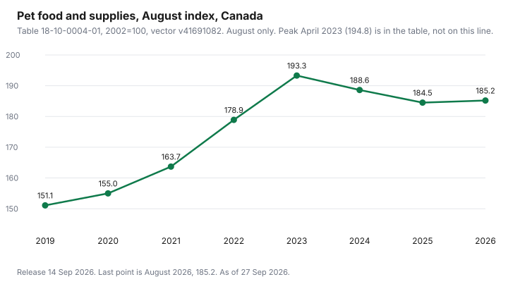

Pets · Canada
Pet Food Prices in Canada 2026: Inflation and How to Protect Your Budget
Pet food prices feel jumpy because the bag in the cart is jumpy, and because the last few years actually moved the index a long way before the latest year went quiet. This page uses two official sources and then a worksheet. Statistics Canada table 18-10-0004-01 is the index, downloaded as the 14 Sep 2026 release and checked 27 Sep 2026. Finance Canada’s counter-tariff list is the tariff check. Nothing below is a feeding plan, a brand ranking, or a prediction of the next bag. Education only.
Key takeaways
- Table 18-10-0004-01, Canada, pet food and supplies, August 2026: 185.2 (2002=100). August 2025 was 184.5. The 12-month change is 0.38 percent.
- The series high from January 1985 through August 2026 is 194.8 in April 2023. August 2026 is 9.6 points, or 4.93 percent, below that peak.
- Finance Canada’s counter-tariff list, checked 27 Sep 2026, includes 2309.90.32 (a milk-solids feed item at 25 percent from 4 Mar 2025). It does not list a 2309.10 retail dog-or-cat-food line. This page does not blame the index on a pet-food counter-tariff.
- No freight rate, currency move, or ingredient price is cited as the cause of this series. Those causes stay off the page.
- Cost per day uses the bag price, the kilograms, and the calorie line. An illustrative 8 kg bag at $40 and 3,500 kcal/kg is $1.43 a day at 1,000 kcal. That row is arithmetic, not a shelf price.
What Statistics Canada's CPI shows for pet food and supplies (dated)
The number people feel at the till is a bag price. The number Statistics Canada publishes for this category is an index.
In table 18-10-0004-01, Consumer Price Index, monthly, not seasonally adjusted, the Canada series named “Pet food and supplies” is vector v41691082, coordinate 2.111, with a base of 2002=100. The cube’s release time on the download used here is 14 Sep 2026, and the last month in the file is August 2026. The August 2026 index is 185.2. August 2025 was 184.5. Dividing 185.2 by 184.5 and subtracting 1 is 0.38 percent. That is the 12-month change in the index, not the change in any one brand of kibble.
The same file’s highest reading from January 1985 through August 2026 is 194.8, in April 2023. August 2026 is 9.6 index points below that peak. 9.6 divided by 194.8 is 4.93 percent. The climb into that peak was the sharp part: August 2021 was 163.7 and August 2023 was 193.3, a rise of 29.6 points, which is 18.08 percent of the August 2021 reading (29.6 divided by 163.7). August 2024 was 188.6, down 2.43 percent from August 2023. August 2025 was 184.5, down 2.17 percent from August 2024. The index then barely moved into August 2026. A household that still feels every bag is expensive is not imagining the level. The level is far above 2019. August 2019 was 151.1. August 2026 at 185.2 is 22.57 percent above that August (34.1 divided by 151.1). What eased is the year-over-year rate, not a return to 2019.
This series sits under household operations, not under “food purchased from stores.” Do not paste a grocery inflation rate onto a bag of cat food and call it the same statistic. The cost-per-day guide is how a single bag is divided. This page is the backdrop that bag sits in. Ontario Veterinary Medical Association’s 2025 canine sheet, checked 27 Sep 2026, prints food at $866 in the puppy year and $1,418 for an adult dog. The feline sheet prints food at $674 in the kitten year and $773 for an adult cat. Those are provincial averages on a cost-of-care sheet, not CPI, and they are not a brand. The dog cost guide walks the rest of the canine sheet.
| Period | Index | 12-month change | Table |
|---|---|---|---|
| Aug 2019 | 151.1 | — | 18-10-0004-01 |
| Aug 2020 | 155.0 | 2.58% | 18-10-0004-01 |
| Aug 2021 | 163.7 | 5.61% | 18-10-0004-01 |
| Aug 2022 | 178.9 | 9.29% | 18-10-0004-01 |
| Aug 2023 | 193.3 | 8.05% | 18-10-0004-01 |
| Apr 2023 (series high) | 194.8 | — | 18-10-0004-01 |
| Aug 2024 | 188.6 | -2.43% | 18-10-0004-01 |
| Aug 2025 | 184.5 | -2.17% | 18-10-0004-01 |
| Jul 2026 | 186.1 | — | 18-10-0004-01 |
| Aug 2026 | 185.2 | 0.38% | 18-10-0004-01 |
Why prices moved: inputs, freight, currency and tariffs (sourced only)
The heading lists the causes people reach for. This guide can source the index.
It cannot source a freight rate, a currency move, or a feed-ingredient price as the reason pet food and supplies printed 185.2 in August 2026. No source cited here assigns those drivers to this series. Leaving them blank is the point of “sourced only.” A story about trucks or the dollar that was not on a page is not filled in here.
Tariffs are the one driver with an official list to check. Finance Canada’s “Complete list of U.S. products subject to counter tariffs,” checked 27 Sep 2026, says the page is the authoritative source for tariff items, effective dates, and rates, and also says the consolidated list is prepared for information purposes and has no official sanction. It should be read with the Schedule to the Customs Tariff. On that list, the only tariff item beginning 2309 is 2309.90.32: preparations of a kind used in animal feeding, described as complete feeds and feed supplements containing 50 percent or more by weight in the dry state of non-fat milk solids, over access commitment, at 25 percent, effective 4 Mar 2025. A search of the same list did not find a 2309.10 line, the heading used for dog or cat food put up for retail sale. This page does not treat counter-tariffs as the explanation of the pet-food index. It also does not claim that 2309.90.32 is the kibble in a Canadian aisle. Confirm a specific import with the tariff item, not with a chapter title. The September 2026 measures described at the top of that page are aimed at sectors such as steel, aluminum, dairy, appliances, and electronics. They are not, in the lines cited here, a retail pet-food schedule.
Unit pricing: price per kg and per day, not per bag
A heavier bag can be the expensive food. Price per kilogram is bag price divided by the kilograms printed on the bag.
Cost per day still needs the calorie line, because two foods at the same price per kilogram are not the same meal if one is much denser. The formula on the cost-per-day guide is cost per day = (price ÷ (kilograms × kilocalories per kilogram)) × daily kilocalories. The grocery unit-price guide is the same instinct per kilogram or per litre, without the calorie step. Use both. Stop at price per kilogram only when the bag does not print kilocalories. A bag without that line cannot be compared per day yet.
One labelled example, not a shelf price anyone was charged: an 8 kg bag at $40 is $5.00 per kilogram. At 3,500 kilocalories per kilogram, one kilocalorie costs 5 divided by 3,500, which is 0.1429 cents. One thousand kilocalories a day is $1.43 (1,000 × 5 ÷ 3,500, rounded to the cent). Change the daily kilocalories and the day changes. The feeding amount is the one your veterinarian or the bag’s feeding table gives you for this animal. This page does not set it. The store-brand pet food guide is where a house-label bag is run through the same division, including the Kirkland line that guide priced.
Protecting your budget: bigger bags, autoship, store brands, loyalty
A bigger bag protects the budget only when two things are true. The price per kilogram, or the cost per day, is actually lower, and the animal will finish the bag while it is still what you meant to feed.
A 15 kg bag that is cheaper per kilogram and then sits open until it is thrown out was not cheaper. Write the unit price before you congratulate the bulk tag. Store brands get the same test, not a pass for the logo. The household store-brand guide is paper and soap. Do not copy a paper-towel result onto a diet.
Autoship is a schedule, not a discount, until the email shows a discount. The Subscribe and Save guide is the habit of reading the price in the reminder, for Amazon.ca. Pet-banner autoship rules that were on a page checked for the where-to-buy guide and again for the loyalty guide in this set are a different contract: a percent off, a points payout, or a free bag after a count. None of those is a reason to keep a food the animal has stopped eating. Loyalty that pays two percent back on the expensive kilogram is still the expensive kilogram. Run cost per day first. Then ask whether the points or the free bag change the bag you would actually buy.
Switching foods safely
This is not veterinary advice. A cheaper index, or a cheaper bag, is not an instruction to change what the animal eats this week.
If you do switch, follow the transition printed on the new bag. If the bag prints no transition, ask the clinic rather than inventing a day count. Watch appetite and stool. Stop and call the clinic if the animal will not eat or is unwell. A food that must be used only as a veterinarian directs is not a unit-price project. The vet-bill guide is how to ask for an itemized estimate when a diet change turns into a visit. It is not a reason to delay that call.
Do not “use up” a bag the animal is refusing by mixing it forever into the new food to justify the money already spent. The money is spent. The next dollar is the one the worksheet is about. If a fresh or raw plan is the switch you are considering, the cost-per-day check and the raw-handling rules are the fresh-food guide in this set. Public Health Agency of Canada pages cited there do not recommend raw diets. A lower sticker, if you ever see one, does not overrule that.
Budget worksheet
Put the day on a month, then on a year, and park it the way you park any other bill that does not send a neat invoice. The sinking-fund guide is that habit for tax and insurance.
Food is the same shape of problem: a repeating cost you would rather not meet out of the grocery float. The adult dog line of $1,418 on the OVMA sheet, divided by 12, is $118.17 a month if you round 1,418 ÷ 12 to the cent. That spreads a provincial average. It is not your budget until the cost-per-day line replaces it.
| Row | Bag price | kg | kcal/kg | Daily kcal | Cost per day | × 30 days |
|---|---|---|---|---|---|---|
| Illustrative example | $40.00 | 8 | 3,500 | 1,000 | $1.43 | $42.90 |
| Food you buy now | ||||||
| Food you might switch to |
The illustrative month is 1.43 × 30 = $42.90. A 31-day month is 1.43 × 31 = $44.33. Use the length of the month you are funding. If the daily kilocalories are a guess, the month is a guess. Write the source of the daily figure in the margin: bag chart, or clinic. Then compare that month with the loyalty math before you join a program to “save” on a food you have not priced per day.

Sources & date stamps
- Statistics Canada, table 18-10-0004-01, Consumer Price Index, monthly, not seasonally adjusted. Canada, Pet food and supplies, vector v41691082, 2002=100. CSV from the 14 Sep 2026 release (file dated 14 Sep 2026). August readings and the April 2023 high of 194.8 are from that file. Checked 27 Sep 2026.
- Department of Finance Canada, Complete list of U.S. products subject to counter tariffs, checked 27 Sep 2026. Tariff item 2309.90.32 at 25 percent from 4 Mar 2025. No 2309.10 retail dog-or-cat-food line found on that list. The page says the consolidated list is for information and has no official sanction.
- Ontario Veterinary Medical Association, Cost of Care canine and feline PDFs, checked 27 Sep 2026. Puppy food $866, adult dog food $1,418, kitten food $674, adult cat food $773. Provincial averages, not CPI.
Frequently asked questions
Why is pet food so expensive in Canada?
The Canada pet food and supplies index in Statistics Canada table 18-10-0004-01 was 185.2 in August 2026, against a 2002 base of 100, and August 2019 was 151.1, so the level is 22.57 percent higher than that August. The year-over-year change into August 2026 was only 0.38 percent, after a climb that peaked at 194.8 in April 2023. This page does not cite a freight rate, a currency figure, or an ingredient price that explains the level. Compare the bag you buy on cost per day, not on how the index feels.
How much has pet food inflation been?
Using table 18-10-0004-01, Canada, pet food and supplies, August 2026 was 185.2 and August 2025 was 184.5, a 12-month change of 0.38 percent, while August 2022 to August 2023 was 178.9 to 193.3, or 8.05 percent. August 2023 to August 2024 was a decline of 2.43 percent, and August 2024 to August 2025 was a decline of 2.17 percent. The series high from January 1985 through August 2026 is 194.8 in April 2023. These are index changes, not the change in a named brand.
Did tariffs affect pet food prices?
This page does not say they did. Finance Canada’s complete counter-tariff list, checked 27 Sep 2026, includes tariff item 2309.90.32, a complete feed with 50 percent or more non-fat milk solids, over access commitment, at 25 percent from 4 March 2025, and a retail dog-or-cat-food item under 2309.10 was not on that list. The list says it is information and has no official sanction, and that it should be read with the Customs Tariff. Do not treat a chapter title as proof that the kibble in your cart was surtaxed.
How can I save on pet food?
Divide the bag by kilograms and, when the bag prints them, by kilocalories, and feed the amount the bag or your veterinarian gives you; a bigger bag, a store brand, an autoship discount, or a loyalty free bag only helps after that division. An illustrative 8 kg bag at $40 and 3,500 kcal per kg is $1.43 a day at 1,000 kcal, and that is arithmetic, not a shelf price. Keep a food the animal is doing well on until you have a reason, besides the index, to switch.
Is it safe to switch my pet's food?
This page is not veterinary advice and does not clear a switch. If you change foods, follow the transition printed on the new bag, and if the bag prints none, ask the clinic instead of using a made-up day count. Call the clinic if the animal will not eat or is unwell. A food labelled for use only as a veterinarian directs is not a unit-price experiment, and raw diets are a separate safety question because the public-health pages cited in the fresh-food guide do not recommend them.
Researched and drafted with AI assistance and fact-checked against official Canadian sources. How we create content.